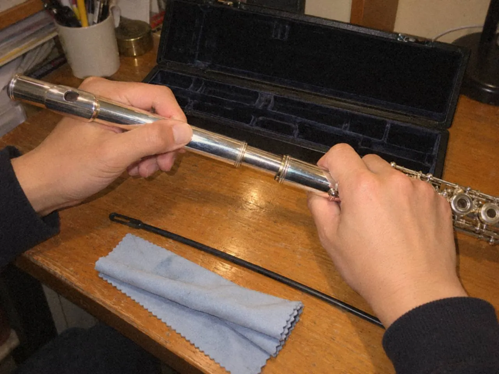
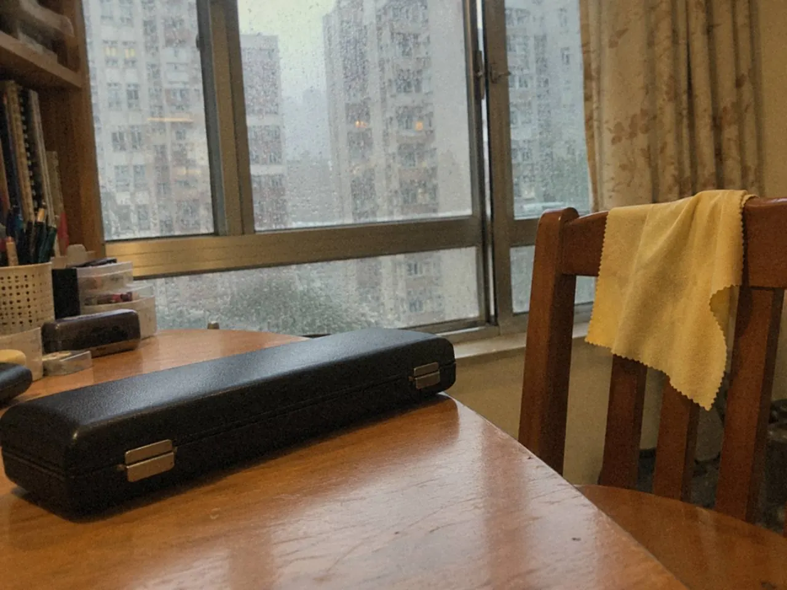

長笛每天吹完做三件事：處理管內水氣，輕抹外表，放回合適的盒位。這幾步用不了多少時間，卻直接影響聲音反應。水氣、灰塵和錯誤拆裝，都會縮短樂器的壽命。

保養最容易敗在疲倦的晚上。練完想快點收工，笛往盒裏一放，第二天的水氣和異味就留給了自己。
吹完後三件事，順序怎樣？
收笛前先把清潔用品放好，不要拆到一半才找布。
逐節拆開時，握住管身合適的位置，不要壓迫按鍵。拆裝次序亂了或用力握錯地方，受壓的是按鍵。

- 按樂器說明處理管內水氣。用合適的清潔棒和乾淨、大小合適的軟布，不讓裸露的硬物碰到管內，避免刮傷。
- 外表輕抹乾淨，擦拭只做日常可以處理的部分。
- 放回合適的盒位。樂器各就其位，布和配件不要擠壓按鍵。
每次收拾都做得到，保養才不會變成臨時補救。
香港潮濕天氣要多做甚麼？
天氣潮濕時，水氣較難自己散去，上面第一步更不能省。
抹過水氣的濕布，不要和笛一起悶在盒裏。下次開盒，留意有沒有異味、殘留水氣，或者機械反應和平時不同。有的話先找原因，別當沒事繼續吹。

平日也可以問自己三個問題：練完怎樣抹？笛放在哪裏？聲音反應有沒有變慢？
幾時送修？
看到這些情況，交給合適的技師：
- 皮墊黏連
- 按鍵不回彈
- 螺絲或接合處有異常
皮墊黏連或按鍵不回彈時，不要反覆用力嘗試。
自己不要做的事也要記清楚：不要隨意加油，不要用水浸洗，不要自行大幅調整機械部分。這些動作看來是幫忙，弄錯了修起來更麻煩。
聲音出問題時，也不一定是笛壞了。低音反應慢，可以先按長笛三個音區的方法比較，再判斷要不要送修。
常見問題
長笛可以用水洗嗎？
不可以用水浸洗。日常只處理管內水氣和外表，其餘交給技師。
按鍵卡住了，可以自己加油嗎？
不要。不要反覆用力按，也不要隨意加油，請技師檢查。
布可以放在笛盒裏嗎？
可以放，但不要擠壓按鍵。濕布先拿出來，免得水氣留在盒內。
今晚收笛時，把清潔棒和軟布先放好，再開始拆。還未選笛，可以先讀選第一支長笛的維修部分；想知道上課時會處理甚麼，可以看長笛課程。